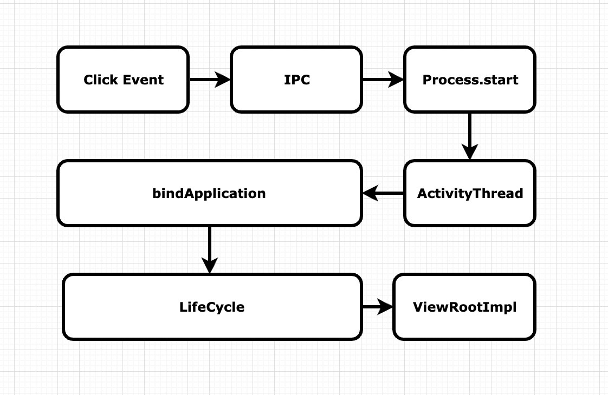

APP启动优化
背景介绍
- 第一体验：我们为啥要吧启动优化放在最前面，启动速度是用户对我们app的第一体验，但凡要使用我们的App，一定会打开他，如果说启动速度非常慢，给用户第一体验非常不好
- 八秒定律：互联网中有个八秒定律，如果说一个网页打开八秒扔没打开，那么70%用户就会放弃等待，这个留存就非常低了
启动分类
App startup time是官方发布的一篇文章，把启动分为三种
- 冷启动（耗时最多，衡量标准，因为做的事情最多)

点击Icon，出发IPC操作，之后会走到Process.start，这个方法是来进行进程创建的，接下来有个重要的类ActivityThread，这是每个单独进程的入口，相当于main方法，在main方法中会进行消息循环的创建，已经相关handler创建，创建完成之后会走到bindApplication，这步是通过反射创建Application，以及调用跟Application相关的生命周期，结束后会走到Activity LifeCycle，生命周期结束后会走到ViewRootImpl，这个地方才会开始真正的进行界面的绘制，可以看到对于冷启动来说进行了一系列操作，所以说耗时也是最多的 - 热启动
最快（从后台切换到前台） - 温启动
较快 只会重走Activity生命周期，不会走哪些进程的创建，以及Application的创建
相关任务
- 冷启动之前
- 启动App
- 加载空白Window
- 创建进程
这三个任务都是系统的行为，我们是没办法进行一个干预的，第二条可以进行一个假的干预
- 随后任务
- 创建application
- 启动主线程
- 创建MainActivity
- 加载布局
- 布置屏幕
- 首帧绘制
优化方向
- Application和Activity生命周期
启动时间测量方式
adb命令
adb shell am start -W packagename/首屏Activity
- ThisTime : 最后一个Activity启动耗时
- TotalTime : 所有Activity启动耗时
- WaitTime: AMS启动Activity的总耗时
线下使用方便，不能带到线上，而且并非严谨、精确时间
手动打点
启动时埋点，启动结束埋点，二者差值
- 误区： onWindowFocusChanged只是首帧时间
- 正解：真实数据展示，Feed第一条展示
1
2
3
4
5
6
7
8
9
10
11
12
13
14
15public class LauncherTimer {
private static final String TAG = "LauncherTimer";
private static long sTime;
public static void startRecord() {
sTime = System.currentTimeMillis();
}
public static void endRecord() {
long cons = System.currentTimeMillis() - sTime;
LogUtils.iTag(TAG, "timer ----- " + cons);
}
}
启动优化工具选择
traceview
- 图形的形式展示执行时间、调用栈等
- 信息全面，包含所有线程
使用方式
开始
Debug.startMethodTracing("");
结束Debug.stopMethodTracing("");
生成文件在sd卡Android/data/packagename/files
注意：需要先把文件保存到电脑上，再通过CPU Profiler倒入，我双击直接打开会出现问题
Threads(21) 说明有21个线程
Wall Clock Time 线程真正的执行时间
Thread Time 线程CPU执行的时间
Call Chart 和 Top Down 有用，其他两个用户不大- 运行时开销严重，整体都会变慢
- 可能会带偏优化方向
- traceview 与 cpu profiler
systrace
- 结合Android内核的数据，生成html报告
- API18以上使用，推荐TraceCompat
- 使用方法
python systrace.py -t 10 [other-options][categories]
官方地址
python systrace.py -b 8000 -t 10 -a com.wxkj.relx.relx -o systrace.html sched gfx view wm am app
注意 ：mac上可能打开失败， 解决办法是：在chrome地址栏中输入”chrome:tracing”，然后点击load按钮load你的trace.html文件。
walltime 是代码执行时间
cputime 是代码消耗cpu的时间(重点指标)
为什么walltime 和 cputime 是不一样的 举例：锁冲突
优雅获取方法耗时
常规方式
- 背景：需要知道启动阶段所有方法耗时
- 实现：手动埋点 参考
LauncherTimer - 缺点：侵入型强、工作量大
AOP介绍
Aspect Oriented Programming，面向切面编程
Advice
- 一种Hook，要插入代码的位置
AOP实战
添加Gradle 依赖
classpath 'com.hujiang.aspectjx:gradle-android-plugin-aspectjx:2.0.0'apply plugin: 'android-aspectjx'implementation 'org.aspectj:aspectjrt:1.8+'
1 | @Aspect |
异步优化
核心思想：子线程分担主线程，并行减少时间
优化技巧
- Theme切换：感觉上的快
异步优化实战
启动器流程
延迟初始化
- 结合IdleHandler
优化总方针
- 异步、延迟、懒加载
- 技术、业务相结合
注意事项
- wall time 与cpu time ，cpu time 才是优化方向，wall time 是执行这段代码花了多长时间
其它方案
- 收敛启动代码修改权限
- 结合CI修改启动代码需要Review或通知
- 提前加载SharedPreferences ，针对这个sp，大家可能有些误区，认为这样一个操作肯定没有耗时操作，可能有几十个类对sp进行操作，会什么可以对Sp进行优化，原理是我们getSharePerfences会异步去加载文件当中的配置文件，load到我们内存当中，这个文件其实是个xml，然后我们在get，或put一个属性的时候，如果说前面在load到内存的操作没有执行完成，那么它就会一直阻塞等待，因为他们都是拿同一把锁，就会发现既然是IO操作，如果这个文件我们已经存了很久，那么加载这个IO时间就会很长，别饿操作就会去等待它，那么怎么去进行优化呢？
- 在Multidex之前加载，利用此阶段CPU ，因为在Multidex之前，CPU是利用不满的，我们没办法充分利用CPU的一个原因是我们在Multidex之前执行一些操作，很有能会因为一些操作的类，相关联的类不在主dex，在4.x手机上崩溃掉的，所有说我们在Multidex之前直接加载Sp，这是一些系统类，不会报这种错的，这是少有的我们可以在multidex 之前利用CPU的操作
- 复写getApplicationContext() 返回this
- 启动阶段不启动子进程 （例如极光推送）
- 为什么子进程会影响主进程启动时间，子进程会共享CPU资源，比如说主进程在前台启动，这个时候系统给我们分配了四核资源，这个时候子进程来了，子进程也在前台，共享了CPU资源，导致主进程CPU紧张
- 注意启动顺序：App onCreate 之前是ContentProvider
- 类加载优化：提前异步类加载
- Class.forName() 只加载类本身及其静态变量的引用类
- new 类实例，可以额外加载类成员变量的引用类
- 启动阶段抑制GC，抑制GC这样一个背景是会伴随着内存的申请，已经系统对我们申请内存的释放，对于GC是非常耗时的，虽然针对Android不同版本GC时间都会提升，但仍然会很长，所以说启动阶段抑制住GC，不让系统对我们进行回收，这个方案其实native hook
- CPU锁频 会导致耗电量增加，首先系统分配的CPU核心数是固定的，可能是四核 或者 八核，即便是系统分配了八核，但是它也只是派了
8个人过来，并没有出全力，也就是我们CPU的频率并不会很高，系统频率可以给100%，但是只给了50%，拉升CPU频率
面试题
- 你做启动优化是怎么做的？
- 分析现状、确认问题
- 针对性优化
- 长期保持优化效果
- 是怎么异步的，异步遇到哪些问题
- 体现演进过程
- 详细介绍启动器
将每个代码抽象成一个Task，然后进行一个排序，按照依赖关系排列成一个有向无环图，然后使用一个异步队列进行执行，这个队列和CPU数强烈相关的，而且可以最大程度的保证我们的主线程和别的线程都能够执行我们的任务，几乎是同时完成的
- 你做了启动优化，觉得有哪些容易忽略的注意点
cpu time 与wall time 区别
注意延迟初始化的优化 注意用户体验
介绍下黑科技 类加载 CPU拉升 - 版本迭代导致的启动变慢有好的解决方式吗？
启动器 平均分配到线程当中的
结合CI
监控完善